小白如何在window电脑上安装Linux系统（虚拟机）
一、软件准备。
1、 VMware软件
- 下载地址1（迅雷）：http://forspeed.onlinedown.net/down/vmware15.zip
- 下载地址2（网盘-提取码：eom3）：https://pan.baidu.com/s/1UpiQjV4io4bmrMna0irLAg
2、Linux系统
- Ubuntu16.04版本下载（提取码：nxdf）：https://pan.baidu.com/s/16ncSr8AqNEzMxN68_48z6A
- Ubuntu18.04版本下载（提取码：erhb）： https://pan.baidu.com/s/1Yvf1a711W84JrmjMeqELig
二、VMware软件安装
1、解压VMware压缩包得到下图所示文件：
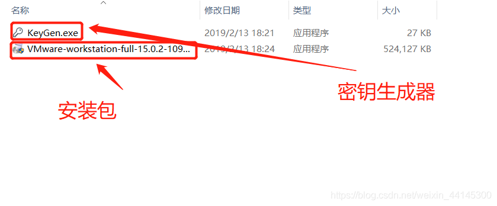
2、打开安装包
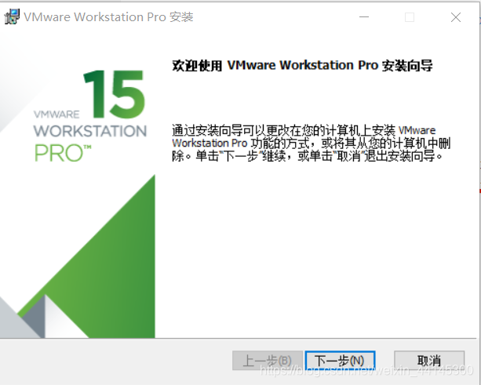
3、按照安装指示完成安装，安装过程中会重置网络，出现网络断开的现象，属于正常现象。
4、打开VMware，出现输入密钥界面，这时候就要用到密钥生成器了，由于我已经破解成功，就不截密钥界面了，密钥生成器界面如下：
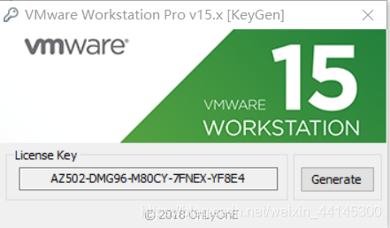
- 点击Generate键生成密匙，复制左侧密匙粘贴在VMware密匙界面里，回车确认即可破解软件
三、在VMware上安装linux系统
1、打开VMware界面如下所示
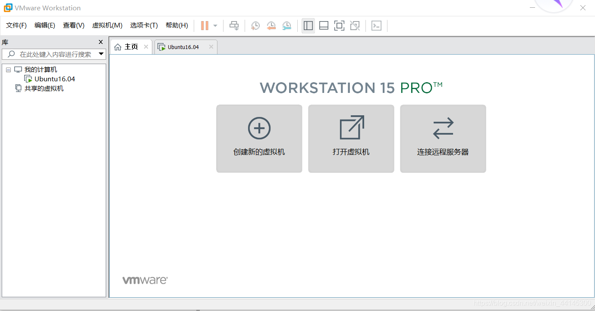
2、点击创建新的虚拟机
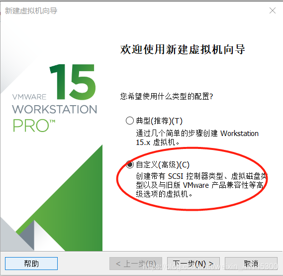
- 选择自定义安装，点击下一步
3、继续选择下一步
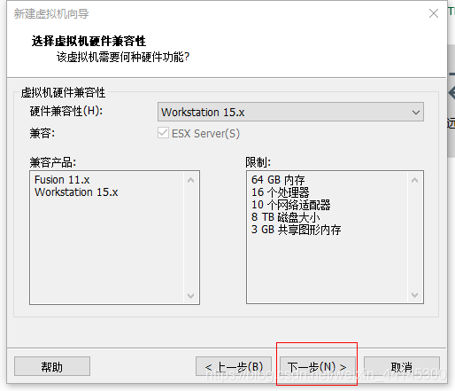
4、选择光盘映像文件，导入的文件为下载的Ubuntu18.04（或者Ubuntu16.04）Linux系统，然后点击下一步：
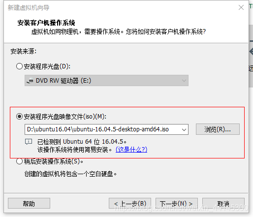
5、输入你的信息，然后点击下一步
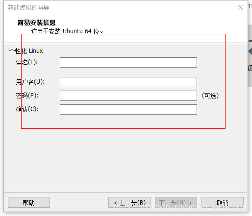
6、输入你的虚拟机名称，按照惯例名称一般不要出现中文，并选择虚拟机部署的位置，然后点击下一部
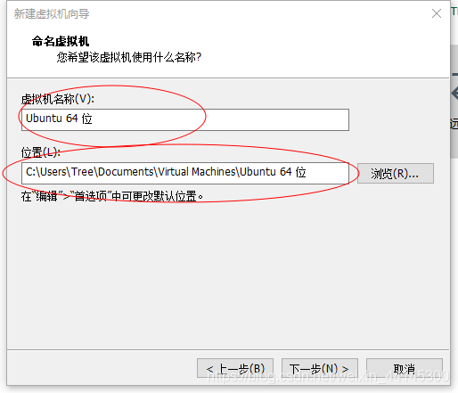
7、依据你电脑的情况选择分配给这台虚拟机的CPU，如果不清楚自己的电脑情况，建议选少一点，不然运行起来对主系统速度影响会很大。然后点击下一步
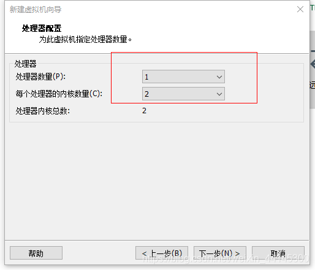
8、调整你想要分配给虚拟机的内存，分配原则和上面一样，一般电脑总运行内存4G，调整完成后点击下一步。
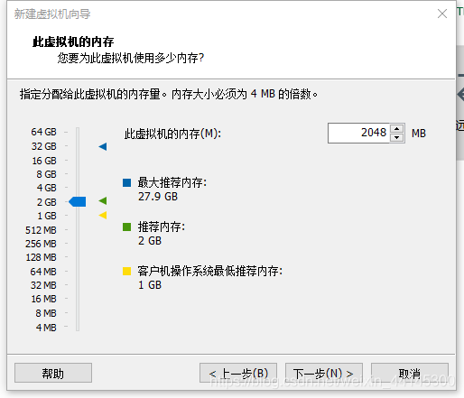
9、如无特殊情况，使用网络地址转换，然后点击下一步
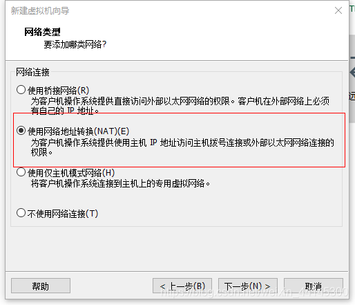
10、I/O控制器类型选择默认类型，然后点击下一步
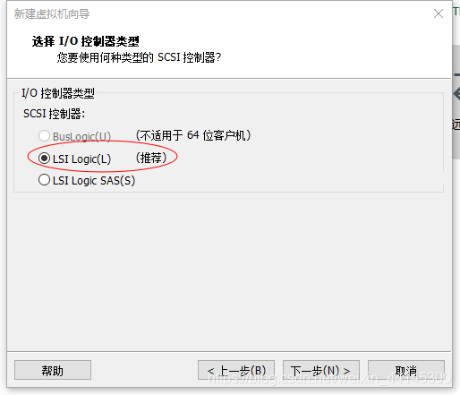
11、磁盘类型选择默认类型，然后点击下一步
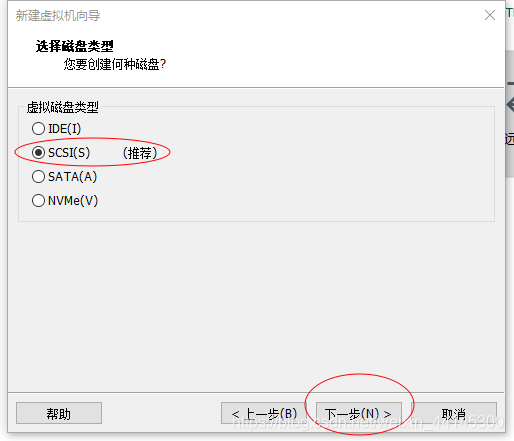
12、如无特殊情况，选择创建新的虚拟磁盘，然后点击下一步
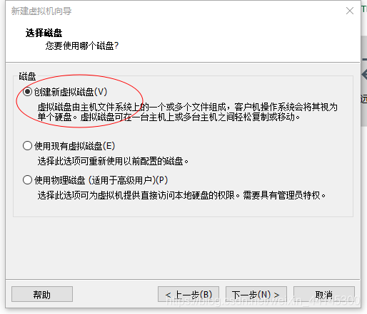
13、选择分配给磁盘的大小，分配原则与CPU、内存一样。选择将虚拟磁盘存储为一个文件，方便管理，然后点击下一步
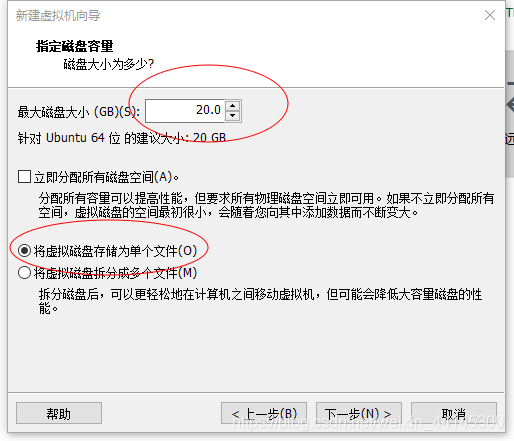
14、给磁盘文件命名，一般不要出现中文，然后点击下一步
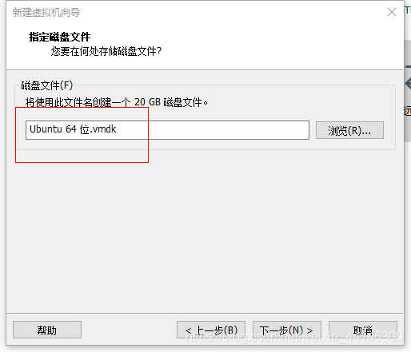
15、核对虚拟机的各种参数，然后点击完成，虚拟机即会自动安装完成
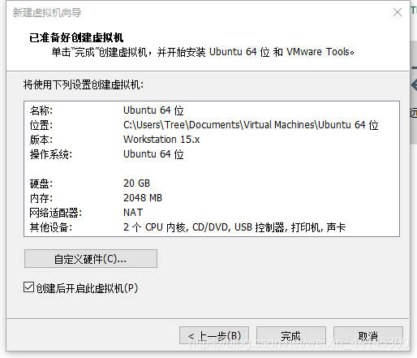
16、安装完成后打开虚拟机如图所示，一般点击全屏以自适应屏幕大小
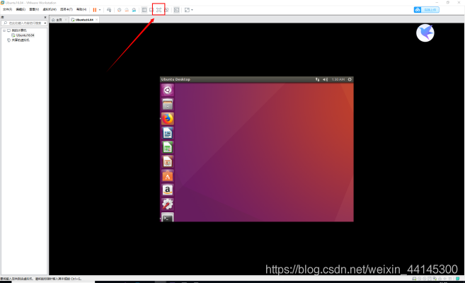
到此Linux虚拟机安装完成


![]()


 6万+
6万+

 举报
举报
 5
5 Do2eM0N:怎么将系统语言切换为中文啊哥4 月前回复
Do2eM0N:怎么将系统语言切换为中文啊哥4 月前回复